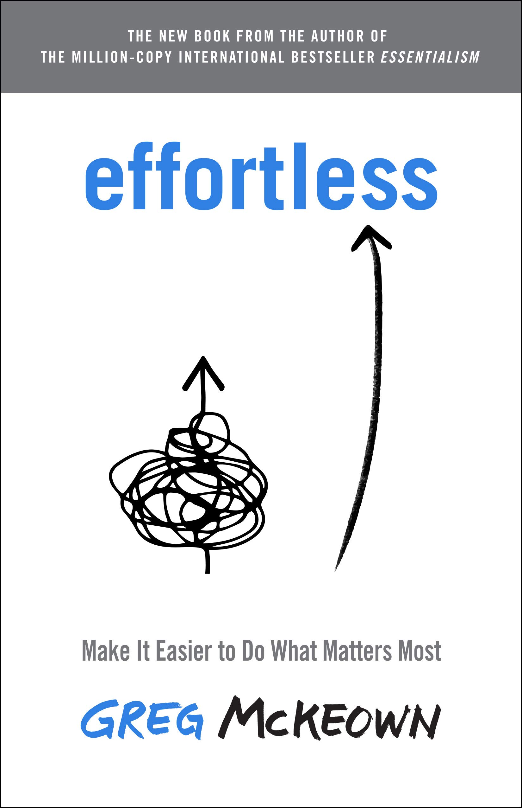

Effortless

By Greg McKeown
My thoughts
Some ideas are discovered synchronously. The idea of a stress-free, high-leverage approach to living had been percolating in my mind for the past year. Had this book not been written, I feel that I would have been compelled to write it. In my mind, I had captured the approach as "Operating from Zero" and was testing similar ideas when the book came out.
This book was the first time I've seen these ideas presented in a coherent way. I was already a huge fan of Essentialism, Greg McKnown's first book, which says there's nothing worse than working hard on the wrong things. It is among the foundations of my productivity knowledge along with Getting Things Done and Getting Results the Agile Way. Effortless is a welcome addition to that list, and a timely resource in our leveraged world.
Notes
Effortless State
The main takeaway from this book is to recognize that we conflate important and hard things.
One way to make things easier is to invert the problem - instead of asking why it's so hard, ask "What would it look it if it was easy?".
Our minds default to taking the mentally easy way out. To make use of this, we can make essential things easier. This makes it more likely that they get done without draining our limited reserves of energy.
Putting ourselves in a state conducive for work makes working easier. Being physically rested, emotionally unburdened and mentally energized is valuable.
Instead of powering through it, how can you make it fun? Pair an essential activity with a reward. For example, music when washing dishes. Podcast when working out.
Reduce the time lag between the work and the reward. I've had success with pomodoros, and they work great for checklist-style tasks.
Focus on what you have regularly. Our minds need to be trained to recognize the good things in our lives.
“When you focus on what you lack, you lose what you have.
When you focus on what you have, you gain what you lack."
Rest. Do nothing for a period of time. Sleep at regular hours, limit food and devices immediately before sleep.
Rituals are great for soothing. Taking time to calm ourselves and put ourselves in an effortless state pays dividends.
Here's a ritual I took and modified from the book, that has been working to put me in a effortless state:
1. Cleaning desk/environment
2. Stretching
3. Breathing Deeply
4. Meditating
5. Practicing Gratitude
Effortless Action
I think there's a lot of anxiety surrounding work. There's a tendency to make "work" seem like "WORK". Work can be made more comforting, and the book approaches it from these angles:
Define:
Know what done looks like. Make a list of sub-tasks and set limits on time you would spend on it.
Ask yourself, if I do everything on this list, will I be satisfied with the day? Give yourself permission to close the work day by sticking to a limited set of items.
Start:
Name the first obvious step.
Sometimes tasks are put off for weeks on end because we havn't defined the first concrete step. Taking the time to brainstorm each sub-task and steps goes a long way in removing the friction to get started. Once a task is started, often the momentum carries us through.
Simplify:
What are the minimum number of steps required to do this?
What would it look like if it were easy?
Preparing ahead of time makes it much easier in the moment, and you would be thankful to yourself for having the space and time to attend to unexpexted events.
Progress:
Start with rubbish. Create a rough draft or prototype and iterate. Focus on getting the bulk of the work out of the way. Create space to tweak the work and smoothen the rough edges after the MVP is done.
Pace:
“Slow is steady.
Steady is smooth.
Smooth is Fast.”
Try to stop work at good hours.
We have a bias for short-term rewards. Having a steady pace works much better over a longer time frame. Don't over-extend.
Set your bounds: Never less than X, never more than Y
Effortless Results
Effortless results are created through compounding effects and automation.
Find things that compound. Some things, once done, will serve you over and over. Creating systems, learning, and teaching are high leverage activities. Aim to identify and combine knowledge unique to you.
Civilization advances by extending the number of important operations we can perform without thinking about them.
Once we are able to produce output consistently, we can look to scale our work. This is done though building systems that give us leverage, through code or labour.
Trust is the engine of high leverage teams. Buffet hires for integrity, intelligence and initiative. A high trust agreement involves mutually understanding:
- What results?
- Who is doing what?
- Minimum viable standards?
- What resources?
- What rewards?
Cumulative costs add up. Solving the root cause gives more time in the long run. Do it once, so you don't have to do it again. Make one decision to avoid a thousand decisions.
You might also like
- Essentialism: The Disciplined Pursuit of Less
- The Effective Manager
- Deep Work